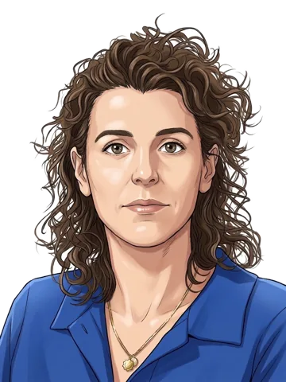
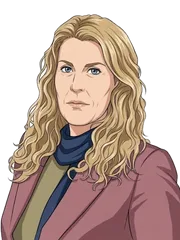
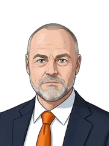

Agenda van dinsdag 10 november 2026
Vragenuur: uitzendkrachten, gentest borstkanker en jeugdzorgkosten
Waar ging het om
In het vragenuur van 10 november 2026 stelden Kamerleden vragen over drie onderwerpen.
Is het ministerie aansprakelijk voor het lagere loon van uitzendkrachten?
In dit vragenuur 3 onderwerpen: Onderbetaling van uitzendkrachten; Gentest bij borstkanker en screening; Kosten van zware jeugdzorg voor gemeenten.
“Minister Kamp heeft willens en wetens een praktijk toegestaan waarvan hij wist dat die juridisch omstreden was. … Mijn eerste vraag aan de minister is dan ook: acht hij het ministerie aansprakelijk?”

“Het staat mensen vrij om daarover alsnog in beroep te gaan en naar de rechter te gaan, maar er is volgens mij niets gebeurd wat niet door de beugel kon. Ik ga hier nu ook geen uitspraken doen over wie daar dan verantwoordelijk voor is en niet.”

Aan het woord in dit debat: PRO (20), D66 (26, coalitie), FVD (7), SP (3), JA21 (9), 50PLUS (2), CDA (18, coalitie), PVV (19), VVD (22, coalitie), Lid Keijzer (1) en het kabinet. Wat zeiden zij?
Meer over dit debat
- Uitzendkrachten: Patijn (PRO) vraagt minister Vijlbrief naar de onderbetaling van uitzendkrachten sinds 2011. Volgens hem is er juridisch niets gebeurd wat niet kon. Hij zegt toe dit met de vakbeweging te bespreken.
- Gentest bij borstkanker: Coenradie (JA21) vraagt minister Hermans waarom de test slechts in een derde van de gevallen wordt gebruikt. Volgens de minister kan geld geen barrière zijn, want de test wordt vergoed, maar ook dat wordt onderzocht, net als andere oorzaken.
- Jeugdzorg: Struijs (50PLUS) vraagt staatssecretaris Van der Burg naar de kosten van zware jeugdzorg voor gemeenten. Die verwijst naar het advies van de commissie-Van Ark in januari en zegt toe de Kamer te informeren.
Wat de sprekers zeiden
Per spreker, in de volgorde waarin ze spraken. Achter elke fractie het aantal zetels en of ze in de coalitie zit.
Onderbetaling van uitzendkrachten
Mariëtte Patijn PRO · 20 zetels
Patijn vindt dat de minister een beetje bagatelliseert wat in 2011 gebeurde, en vraagt of hij het ministerie aansprakelijk acht. Ze wil dat uitzendkrachten actief over hun rechten worden geïnformeerd, en dat in de nieuwe Flexwet alsnog "gelijk" in plaats van "gelijkwaardig" komt, omdat ze dezelfde onderbetaling vreest.
Hans Vijlbrief minister van Sociale Zaken en Werkgelegenheid
Vijlbrief (minister van Sociale Zaken en Werkgelegenheid) zegt dat volgens hem niets is gebeurd wat juridisch niet kon: het was een interpretatie van een richtlijn, waar Kamer en Raad van State mee instemden. Hij zegt toe met de vakbeweging te bespreken hoe uitzendkrachten hun recht kunnen halen en hoe "gelijkwaardig" wordt gemonitord, en wil de Kamer voor de begroting informeren.
Stephan Neijenhuis D66 · 26 zetels · coalitie
Neijenhuis zegt dat Nederland nog steeds via sluiproutes als lagelonenland wordt gebruikt. Hij vraagt wat de minister doet om die routes af te sluiten, zodat arbeidsmigranten niet onderbetaald worden.
Pepijn van Houwelingen FVD · 7 zetels
Van Houwelingen vindt dat het ministerie in 2011 een risico nam, en vraagt hoe het ministerie met risico's omgaat. Hij zegt dat een massaclaim van miljarden euro's kan komen, en vergelijkt dit met de kinderopvang, waar volgens hem juist geen enkel risico mag worden genomen.

Jimmy Dijk SP · 3 zetels
Jimmy Dijk zegt dat honderdduizenden mensen, misschien wel een miljoen, miljarden te weinig loon kregen. Hij vraagt of de minister met de vakbonden wil afspreken dat er een hulp-, meld- en steunpunt komt.
Gentest bij borstkanker en screening

Ingrid Coenradie JA21 · 9 zetels
Coenradie vindt het onbegrijpelijk dat behandelingen worden gegeven zonder te testen of ze werken, terwijl de gentest onder de basisverzekering valt, en vraagt of geld een rol speelt. Ze vindt het goed dat dit verder wordt onderzocht, maar verwacht meer van de minister, en vraagt ook om een duidelijke plek voor diagnostiek bij het ministerie.

Sophie Hermans minister van Volksgezondheid, Welzijn en Sport
Hermans (minister van Volksgezondheid, Welzijn en Sport) zegt dat de test in een derde van de gevallen wordt ingezet en in twee derde niet, en dat vervolgonderzoek de oorzaken moet tonen. Volgens haar kan geld geen barrière zijn, omdat de test wordt vergoed, maar dat wordt wel onderzocht. Ze zegt dat ze niet kan treden in de uitvoering van de richtlijn. Ze zegt toe in gesprek te gaan over diagnostiek, als duidelijk is met wie.
Wieke Paulusma D66 · 26 zetels · coalitie
Paulusma zegt dat vrouwen nu te veel zorg krijgen. Ze wil niet alleen een ledenvergadering van de beroepsgroep afwachten, maar dat de minister de beroepsgroep wijst op de wettelijke plicht tot samen beslissen en daar een stevige toezegging over doet.
André Poortman CDA · 18 zetels · coalitie
Poortman noemt de casus een voorbeeld van waarom de beweging naar passende zorg urgent is. Hij vraagt welke drempels voor het aanbieden van de genprofieltest weggenomen kunnen worden.
Lisa Vliegenthart PRO · 20 zetels
Vliegenthart maakt zich zorgen over borstkankerscreening: door personeelstekorten wachten vrouwen volgens haar een jaar langer op een uitnodiging en sluiten borstenbussen. Ze vraagt wat de minister doet om screening tijdig toegankelijk te houden.

Vicky Maeijer PVV · 19 zetels
Maeijer zegt dat de test kan helpen bij een goed geïnformeerd besluit tussen arts en patiënt, waarbij ook een persoonlijke afweging blijft. Ze wijst op de evaluatie van 2025 (naar schatting 30% getest) en vraagt of de vrouwen in aanmerking wel wisten dat de test bestaat.
Kosten van zware jeugdzorg voor gemeenten

Jan Struijs 50PLUS · 2 zetels
Struijs zegt dat gemeenten door intensieve, complexe jeugdzorg in financiële problemen komen en zegt dat het Rijk wettelijk verplicht is gemeenten genoeg geld te geven. Hij vraagt wat het kabinet nu doet, of het met de VNG in gesprek gaat, en wil niet dat jongeren worden opgesloten omdat men het niet meer weet.
Eric van der Burg staatssecretaris Koninkrijksrelaties en Slagvaardige Overheid
Van der Burg (staatssecretaris, vervangt de zieke minister van BZK) zegt dat de commissie-Van Ark in januari adviseert en dat het kabinet dat zwaar zal laten wegen. Hij zegt dat BZK en VWS gezamenlijk verantwoordelijk zijn, zegt dat het kabinet met de VNG in gesprek is, zegt toe de Kamer op de hoogte te houden en een brief te sturen over perspectief en onderwijs. Met Keijzer is hij het eens dat voor de zwaarste groep de samenleving moet klaarstaan. Op de vraag van Van Brenk zegt hij geen antwoord te kunnen geven, omdat het niet zijn dossier is.

Ruud Verkuijlen VVD · 22 zetels · coalitie
Verkuijlen vraagt of de staatssecretaris voordelen ziet in centraal inkopen van zorg voor de 2% jongeren met de zwaarste zorg, en hoe de verantwoordelijkheden van BZK en VWS liggen. Later vraagt hij naar voorbeelden waarin de jeugdzorg beter in verhouding staat tot de begroting.

Sarah Dobbe SP · 3 zetels
Dobbe zegt dat het jeugdzorgsysteem kapot en verwarrend is, met onder meer 41 jeugdregio's en 342 gemeenten. Ze wil dat de bezuiniging van 1 miljard van tafel gaat en dat de specialistische jeugdzorg terug naar het Rijk gaat.
Luciënne Boelsma-Hoekstra CDA · 18 zetels · coalitie
Boelsma-Hoekstra vraagt of de staatssecretaris het eens is dat het vraagstuk de gezamenlijke verantwoordelijkheid is van BZK en VWS. Volgens haar kunnen er stappen gezet worden als ze het samen doen.
Lisa Westerveld PRO · 20 zetels
Westerveld zegt dat het probleem al jaren zichtbaar was en dat bij de afbouw van de gesloten jeugdzorg te weinig alternatieven zijn ontwikkeld. Ze vraagt wat de staatssecretaris doet om perspectief en goed onderwijs voor deze jongeren te regelen.

Mona Keijzer Lid Keijzer · 1 zetel
Keijzer zegt dat een deel van de jeugdzorg eenvoudige zorg is, waarvan jaren geleden werd gezegd dat die binnen gemeenschappen op te lossen zou zijn. Ze vraagt of we moeten kiezen, zodat er genoeg geld en mensen overblijven voor de zeer zware zorg.

Corrie van Brenk 50PLUS · 2 zetels
Van Brenk vraagt bij de gentest wie ervoor kan zorgen dat vrouwen de kans krijgen op de test in plaats van chemotherapie. Bij de jeugdzorg wijst ze op de zorgen van de VNG, die volgens haar 728 miljoen tekortkomt, en vraagt wat de staatssecretaris vindt van het ontbreken van een positief advies over de samenwerkingsagenda.
Hoe liep het af
Bij een vragenuur worden geen moties ingediend en wordt niet gestemd.